trap_effort.RmdIn order to estimate juvenile abundance (see the BTSPASX in the SRJPEmodel package) from catch data collected at rotary screw traps we need to know how efficient the traps are (what percent of the population is captured in the traps?) and the amount of time the trap is sampling. Hours fished is a calculated field. The goal of this document is to calculate hours fished by date, stream and site.
Data were checked and cleaned in scripts available here.
Cleaned data were saved on the JPE cloud database and pulled using the
pull_tables_from_database.R script.
We explored three primary methods to calculate hours fished. Methods were chosen based on data collected at the RST site. When no times, trap revolutions, or trap revolutions per minute (RPMs) were collected, we assume 24 hours for each day that trap is fishing. The trap revolution method is commonly used by RST programs but we were not able to get reasonable results for most programs we tried it on so we ended up relying on trap times instead of revolutions. This may be due to different methods for determining cone rotation rate. For instance, Battle measures the average time per rotation whereas Feather River and Knights Landing measure the revolutions per minute. Using total revolutions and the cone rotation rate to calculate sampling period may be useful in the future when methods are more similar.
Over time locations have required different methods based on what information is available. For example, historically it was more common that a location might only have one date. However, currently all locations collect both a start and stop datetime. We have therefore adapted method 1 to use in all cases noting that historically when a start or stop date is missing we would apply method 3 and use the last stop time for a missing start date or the next start time for a missing stop date.
Below is the code for each of the methods described above:
# calculating hours fished when have start and stop datetime
hours_fished <- function(dat){
dat %>%
mutate(trap_start_time = as_hms(trap_start_date), # pull out hms from date
trap_stop_time = as_hms(trap_stop_date), # pull out hms from date
start_datetime = ymd_hms(paste(as_date(trap_start_date), trap_start_time)), # fills in 00:00:00 for those without time originally
stop_datetime = ymd_hms(paste(as_date(trap_stop_date), trap_stop_time)), # fills in 00:00:00 for those without time originally
start_datetime = case_when(is.na(start_datetime) ~ lag(stop_datetime),
T ~ start_datetime), # assigns next stop for missing start
stop_datetime = case_when(is.na(stop_datetime) ~ lead(start_datetime),
T ~ stop_datetime), # assigns next start time for missing stop
hours_fished = round(difftime(stop_datetime, start_datetime, units = "hours"), 2))
}total_revolutions/average RMP/60 to get total hours
fished.
# calculating hours fished when have start and stop datetime
revolution_calculated_hours_fished <- function(dat){
dat %>%
filter(!is.na(rpm_start) | !is.na(rpm_end), !is.na(total_revolutions)) %>%
mutate(prior_day_rpm = ifelse(is.na(rpm_end), NA, lag(rpm_end)),
sum_rpms = ifelse(is.na(prior_day_rpm), rpm_start, rpm_start + prior_day_rpm),
cone_rpms = sum_rpms / 2,
hours_fished = case_when(is.na(rpm_start) ~ round(total_revolutions/rpm_end/60, 2),
is.na(rpm_end) ~ round(total_revolutions/rpm_start/60, 2),
TRUE ~ round(total_revolutions/cone_rpms/60, 2)))
}
# calculating hours fished when have only date and time
hours_fished_one_date <- function(dat) {
dat %>%
arrange(site, subsite, start_datetime) %>%
mutate(end_datetime = lead(start_datetime),
end_datetime = case_when(difftime(end_datetime, start_datetime, units = "hours") > 120 ~ start_datetime + hours(24),
T ~ end_datetime),
hours_fished = round(difftime(end_datetime, start_datetime, units = "hours"), 2))
}Based on protocols and information from monitoring programs, sampling periods are typically 24 hours, unless flows are very high in which traps are checked more frequently. Calculating hours fished based on time and date provided in data provides more specificity, however, there are typos and errors resulting in nonsensical hours fished. In these cases, we assume 24 hour sampling periods.
We now process all locations together using a combination of method 1 and 3. All locations currently have both a start and stop date though this was not the case historically. There are cases when start date or stop date is NA. For these we fill in the start date assuming it is the sample date of the previous record. When the stop date is missing we assume it is the start date of the next record. Note that there are some records with 0 hours. These occur because trap visit data was entered when the trap was not in service and then a new trap visit entry was recorded once the trap started working again. There are some erroneous values. These will be addressed at the end of the script by setting limits.
| start_datetime | stop_datetime | site | subsite | stream | hours_fished_methodology | hours_fished |
|---|---|---|---|---|---|---|
| 1997-01-18 09:00:00 | 1997-03-05 09:00:00 | adams dam | adams dam | butte creek | using start time and stop time | 1104.00 hours |
| 1997-03-05 09:00:00 | 1997-03-11 07:00:00 | adams dam | adams dam | butte creek | using start time and stop time | 142.00 hours |
| 1997-03-11 07:00:00 | 1997-03-12 09:15:00 | adams dam | adams dam | butte creek | using start time and stop time | 26.25 hours |
| 1997-03-12 09:15:00 | 1997-03-15 09:00:00 | adams dam | adams dam | butte creek | using start time and stop time | 71.75 hours |
| 1997-03-15 09:00:00 | 1997-03-16 09:30:00 | adams dam | adams dam | butte creek | using start time and stop time | 24.50 hours |
The dot plot below shows hours fished for each stream by date. Most dots appear to be hovering around the 24 hour mark but a few are greater than 1000 or less than -1000 and skew the plot.
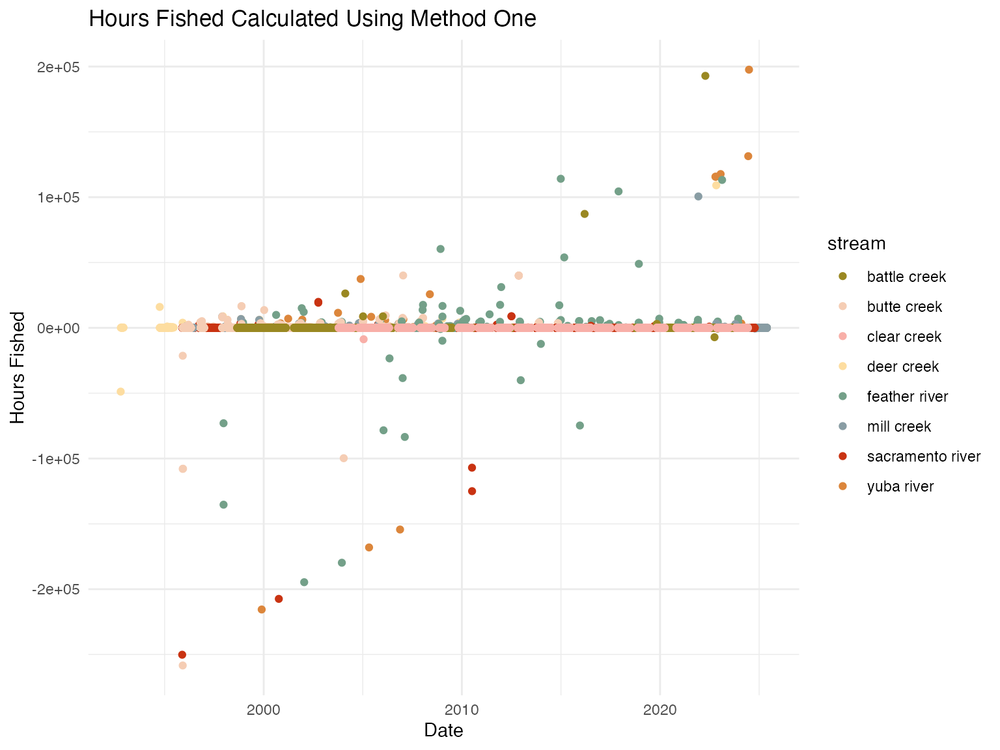
The histogram below shows data filtered to remove the outliers though there are still some inconsistencies with hours fished below or equal to 0. As mentioned above there are reasons why hours fished may be 0.
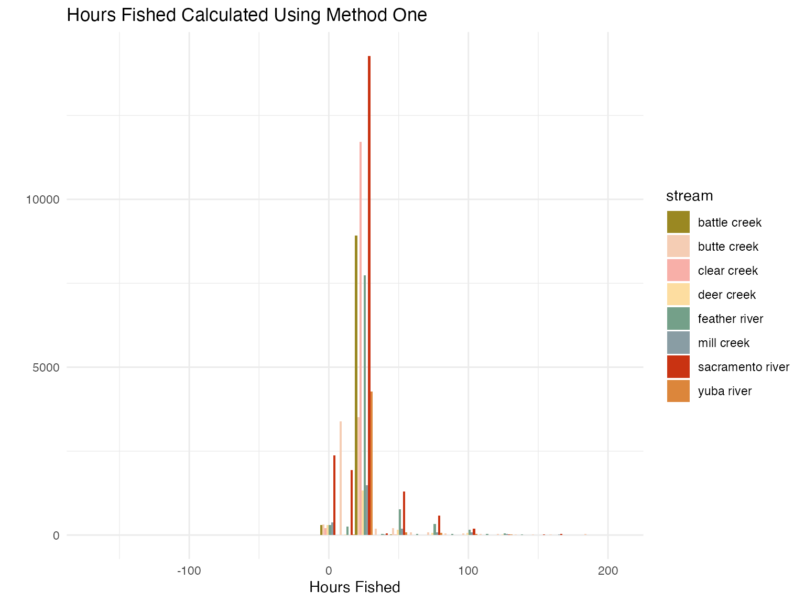
The dot plot below shows hours fished for each stream by date. Here we see several distinct bands of dots in 24 hour increments, indicating that the trap is most often checked every day but that there are some instances where it is checked every other or every few days.
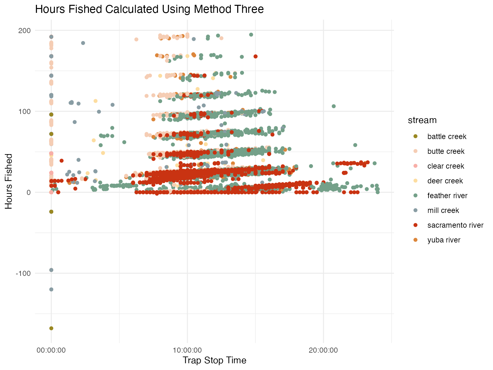
We added rows with 0 effort for days that where there is no trapping data and applied rulesets to ensure erroneous data are not included.
hours_fished_combined %>%
filter(stream == "butte creek") |>
ggplot(aes(x = date, y = hours_fished)) +
geom_line() +
facet_wrap(~subsite, scales = "free")+
scale_color_manual(values = colors_full) +
theme_minimal() +
labs(x = "Week", y = "Hours Fished",
title = "Hours Fished All Methods")
We grouped hours fished data by site, subsite, week, and year and summarized to come up with a weekly hours fished dataset. We capped hours fished to 168 for each stream, assuming that a single trap could not run for more hours than there are in a week. Before 2005 trap data is not available for Knights Landing, we assume 168 hours when trap data is missing.
## # A tibble: 189 × 5
## # Groups: year, stream, site [138]
## year stream site subsite n
## <dbl> <chr> <chr> <chr> <int>
## 1 1992 deer creek deer creek deer creek 6
## 2 1994 deer creek deer creek deer creek 13
## 3 1995 deer creek deer creek deer creek 16
## 4 1995 mill creek mill creek mill creek 2
## 5 1995 sacramento river knights landing 8.3 3
## 6 1995 sacramento river knights landing 8.4 7
## 7 1996 deer creek deer creek deer creek 27
## 8 1996 mill creek mill creek mill creek 24
## 9 1996 sacramento river knights landing 8.3 40
## 10 1996 sacramento river knights landing 8.4 40
## # ℹ 179 more rowsThe following plots provide visuals to show weekly hours fished for a few select stream and calendar year. Note that for the combined plots this is for all years of data so there are multiple datapoints for a given week due to multiple years being represented and multiple subsites.
The following plot shows all years
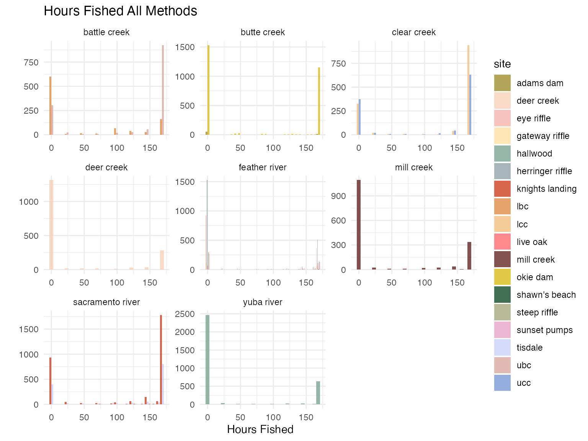